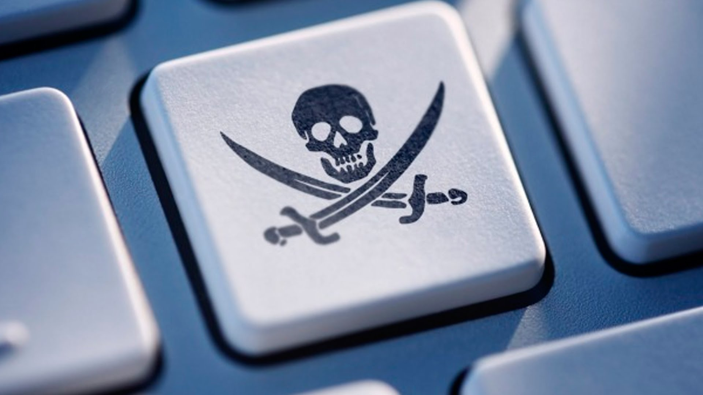
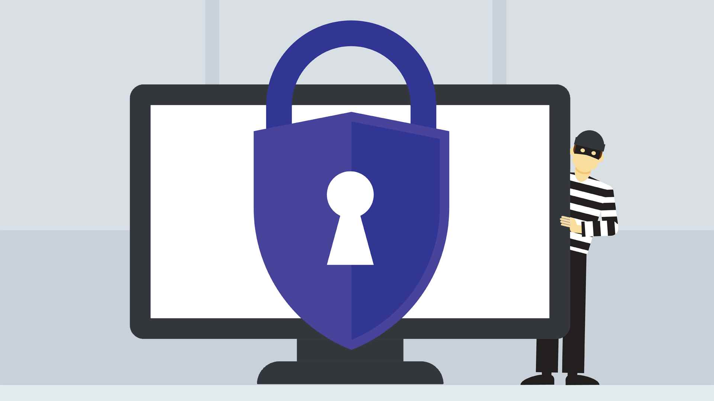

Det er mange ulike typer digitale trussler. Nedenfor er det info om noen typer problemer som har dukket opp på grunn av digitale verktøy:
Piratkopiering
Den aller vanligste formen for cyberkriminalitet er nok priatkopiering. Det er å bruke eller reprodusere en annens verk uten å ha lov til det. Det kan være alt fra å se en film eller høre en sang på et uautorisert nettsted, til å massekopiere og selge en annens programvare. Den største grunnen til at det er så mange brudd på opphavsretten, er nok at det er mye uvitenhet rundt det. Noe så enkelt og lite som å bruke et bilde fra nettet kan være piratkopiering. Derfor er mange en del av denne kriminaliteten uten å være klar over det. Digitale verktøy har åpnet for raskere og mer tilgjengelig fildeling, hvilket gjør det mye vanskeligere å beskytte opphavsretten sin. Ifølge Statista hadde piratsider nesten 28 millarder besøk i 2017. Les mer om hvilke regler som avgjør hva som er ulovlig og lovlig bruk av andres verk her.

Informasjonslekkasjer
I det siste har det vært stort oppstyr rundt måten personlig informasjon på sider som Facebook brukes på. Det beste eksempelet på dette er Cambridge Analytica. Det var et selskap som deltok i valgkampanjene til Ted Cruz, Donald Trump og ved Brexit-valget. De hentet, uten å få tillatelse eller informere brukerne, personlig data fra 50 millioner Facebook-brukere og brukte dette til å gi dem personlige politiske reklamer basert på deres psykologiske profil. I en artikkel fra
The Guardian varslet Facebook om at flere hundre millioner brukere sannsynligvis har fått lekket dataene sine på samme måte. Det er uvisst til hvilken grad dette påvirket valgene, men det viser likevel at sosiale medier har gjort det enklere enn noensinne å samle inn data om millioner av folk samtidig, både på lovlig og ulovlig vis.
Hacking
Ulovlig hacking er å skaffe seg adgang til en datamaskin eller et nettverk, uten å ha autoritet til det. Dette er nok den mest kjente formen for digitale trusler og angrep, siden begrepet involverer veldig mye av moderne datakriminalitet. Det å bli hacket betyr vanligvis i denne sammenhengen å bli utsatt for datainnbrudd. Når en hacker har fått tilgang på datamaskinen din, har de tilgang på alle filene dine og all informasjon lagret på datamaskinen din. Det er opp til hackeren, hva disse ressursene blir brukt til. Den vanligste kriminelle handlingen er å holde datamaskinen og filene dine til gissel og kreve løsepenger for å få tilbake filene og datamaskinen. Samtidig er det mange forskjellige datatrusler som man kan bli utsatt for og alt tyder på at dette tallet vil øke. Et dataangrep trenger ikke å være rettet mot privatpersoner, men kan ramme store selskaper og i verste fall stater. Store selskaper og statlige institusjoner har massevis av data over kunder, personer og ressurser. Hackerne er ofte på leting etter kredittkortinformasjonen til privatpersoner, ettersom de kan stjele massevis av penger ved å lage falske transaksjoner. Å beskytte seg mot pengesvindel er viktigere enn noen gang. I tillegg til selskaper har dataangrep mot stater slik som Norge økt kraftig de siste årene. I 2017 var økte tallet på antall cyberangrep mot Norge på over 22 000 angrep. I følge NRKs artikkel økte tallet med 15% på ett år. Til NRK kommenterer sjefen for NSM at: «De mest alvorlige angrepene er spionasje mot statlige myndigheter og viktige norske bedrifter.»
